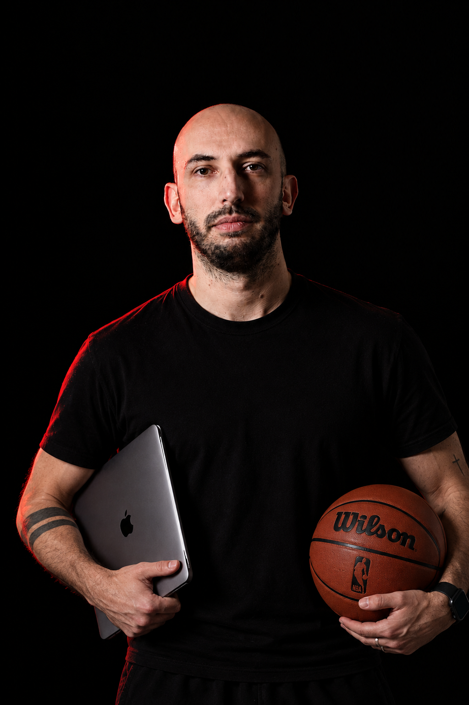
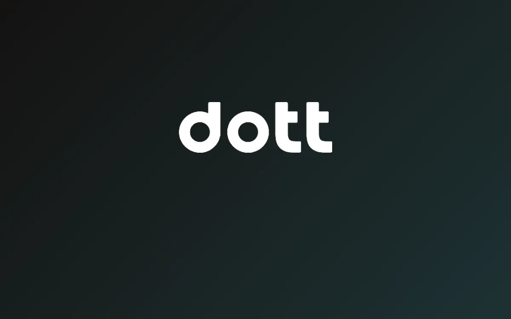
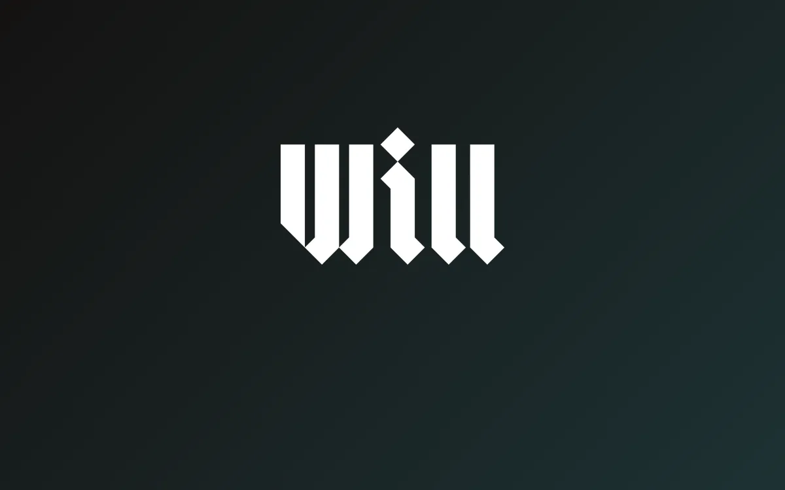
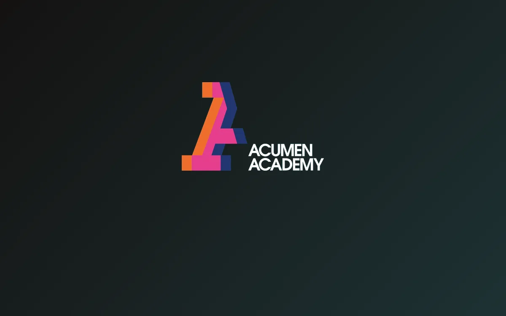

Digital strategy & contenuti
Strategia di crescita, social media management e storytelling per aziende, club e brand sportivi.
Digital & Sports Communication Strategist
Comunicazione, marketing digitale e sviluppo aziendale, tra analisi dei dati e strategia. Un metodo allenato anche nel mondo sportivo, senza perdere la parte creativa.

Chi sono
Mi chiamo Renato Valigi e lavoro nella comunicazione digitale e nel growth marketing, con un metodo che unisce analisi dei dati, strategia, creatività e, spesso, sport.
In questi anni ho lavorato come freelance su ruoli diversi, spesso in parallelo: responsabile della comunicazione, creative communication designer, social media manager, fino a diventare Head of Communication, occupandomi di strategia digitale, contenuti, media relations e comunicazione con sponsor e partner.
Sul lato sportivo il percorso è stato altrettanto lungo: ho iniziato allenando le giovanili di categoria Eccellenza, sono diventato assistente allenatore e match analyst in Serie C, fino a diventare capo allenatore nel progetto Grypho Basket Perugia. Un percorso che mi ha insegnato a leggere i dati e le persone con lo stesso metodo con cui oggi analizzo un mercato o costruisco una strategia.
Mi sono laureato in Comunicazione e Media Digitali con 110 e lode e ho un diploma in Sports Communication & Fan Engagement con la FC Barcelona (sì, quella del calcio) Innovation Hub. Ho le qualifiche FIP di Allenatore e Match Analyst avanzato, e sto completando un Master universitario di primo livello in Growth Marketing e Agenti AI: un percorso che mi ha portato a lavorare su progetti di crescita aziendale reali, tra analisi strategica, roadmap e strumenti di intelligenza artificiale applicati al marketing.
Competenze principali
Strategia di crescita, social media management e storytelling per aziende, club e brand sportivi.
Rapporti con la stampa e gestione della comunicazione istituzionale, verso sponsor e partner commerciali.
Identità visiva e produzione creativa, con Canva, AI e Adobe Illustrator.
Lettura e interpretazione dei dati con Excel, certificazione Google Data Analytics, per decisioni informate.
Analisi video e statistica sportiva, con qualifica avanzata FIP.
Gestione di gruppi giovanili e prima squadra, con qualifica Allenatore FIP e attestato da Sports Performance Coaching.
Progetti in evidenza

Consulenza strategica di growth marketing per l'operatore europeo di micro-mobilità elettrica: analisi competitiva, SWOT e un sondaggio primario che ribalta il problema di partenza. Il prodotto convince, ma il 62% del campione non conosce il brand.
Vai al portfolio
Campagna social sul tema AI e performance sportiva per la media company da 1,9M di follower: obiettivi SMART, concept creativo e piano contenuti.
Vai al portfolio
Analisi as-is e ricerca utente per il redesign UX/UI della scuola formativa del fondo Acumen, tra analisi euristica, benchmark e sondaggio primario.
Vai al portfolioSe cerchi qualcuno che sappia raccontare un progetto e anche costruirlo, sono qui per questo.